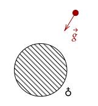
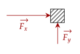
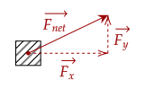
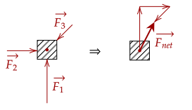
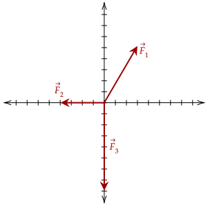
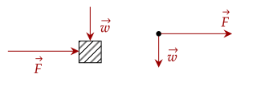
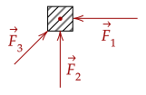
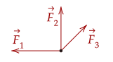

In kinematics, we discussed motion without dealing with why motion happens. Now, we discuss a fundamental quantity that affects how objects move.
Right now, we should try to get a footing on what force really is. We should first list what properties it has.
One way to describe force is that it is something which pushes on an object, or pulls on it. For example, you can push a box, or pull it with your hands.
When a force does something on an object, it is said to "act upon" it. In honor of Sir Isaac Newton, the unit for force is the newton.
However, when we pull or push something, we can't guarantee that it can move; pushing a very heavy box doesn't necessarily mean it moves. Further, force can also slow down motion, just like how acceleration can slow down velocity.
This shows another important property of force; it needs direction. This means it is a
The main property that allows us to classify them as a vector is that they have direction. Further, we can add them together like vectors.
Another thing you may notice is that force may or may not require contact. For example, you may have heard the term
The other kind of force, called field forces, don't require contact. We've encountered this type of force before in our study of free fall and the acceleration due to

An object can have multiple forces act on it simultaneously. For example, you may push a box in one direction, while your friend pushes the box in another direction.

Yes. In the first approach, their directions of pulling are opposite each other, and effectively cancel out. In the second approach, they both pull with the same direction, and thus have a larger pull.
Since we stated force is a vector, we can add these two vectors together.

The figure above shows that forces added together create a new resultant force. This resultant force is quite handy to use instead of analyzing individual forces, so we should give it a name.
Mathematically, we can write the net force as the sum of all the individual forces.
Graphically, it is the same as adding each of the forces, tip to tail.

To add them numerically, we look back to what we did when we first discussed vectors in two-dimensions. That is, use the pythagorean theorem and inverse trigonometric functions to get the magnitude and direction respectively.

Like we did when we analyzed vectors in two dimensions, we first get the x-component and the y-component. The x-component is just −100î while the y-component is −300ĵ.
To get the magnitude, we use the pythagorean theorem.
For the angle measure, we use the arctan() function.
Thus, we get that is a vector with magnitude 316.23N and direction 71.57° counterclockwise from the −x axis.
When we analyzed projectile motion, it was much easier to analyze it by its individual components instead of the full initial velocity. We can apply this same thinking with force.
To analyze the individual forces from the surroundings that act on an object, we use a free body diagram, which shows all the external forces that act on an object.

To draw a free body diagram, one first needs to identify what forces act on the object.
For example, when we stand on the ground, gravity pulls us down towards the Earth. However, something is stopping us from going straight down to the center of the Earth. This force is called the
When we float on the water, we are pulled down by gravity. However, we aren't pulled all the way down to the bottom of the pool. That means that the water is causing us to float, called

Below is the drawn free body diagram.

We know that the only thing acting on an object in free fall is the gravitational acceleration. Since nothing else should happen, we assume that this is the only thing that should be drawn in the free body diagram. We usually set "going up" as positive, so in a free body diagram the force should point down.
As of now, we have an qualitative definition of force. However, we haven't made a quantitative connection to how force actually affects motion. However, with the advent of Sir Isaac Newton's laws, we can begin to connect dynamics and kinematics in a more quantitative manner.